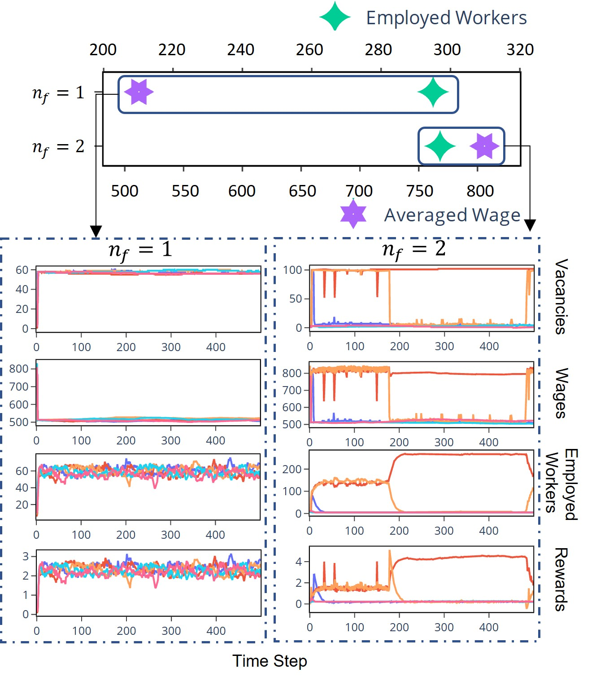

摘要
本文提出一个在基于主体的模型（ABM）中应用强化学习（RL）的框架，用于研究劳动经济学中的劳动力市场动态。ABM 为模拟经济系统提供了灵活的平台，尤其适合刻画异质主体及其复杂互动，从而有效捕捉劳动力市场中的非线性与涌现现象。我们将一个已有的劳动力市场模型扩展到 RL 框架中，使用深度确定性策略梯度（DDPG）算法训练主体以最大化利润，并将其表现与遵循预定策略的有限理性主体进行比较。结果表明，RL 主体会根据市场的竞争程度和理性程度自发地学到不同策略，这些策略显著影响失业和工资分布等结果。本研究说明了 ABM 在分析劳动力市场动态中的作用，展示了配备 RL 的主体如何在不断变化的经济环境中学到最优策略，为政策分析和探索劳动力市场行为的复杂性提供了有力工具。
模型
劳动者通过雇佣和解雇在失业与就业之间流动。每一步中，每家企业设定职位空缺数和一个工资系数，后者把工资定在失业救济与劳动者创造的价值之间。雇佣人数由失业者与空缺数的匹配函数 m(u, v) 决定，每个匹配成功的求职者从随机抽取的 nf 个空缺中选择工资最高的一个。
市场中有两类企业。RL 企业观察市场状态，用 DDPG 学习空缺和工资策略以最大化利润。趋势跟随企业使用固定规则：比较自己的工资与市场平均工资、实际雇佣与预期雇佣，然后调整工资或空缺数。参数 nf 决定企业之间的竞争程度，也相当于求职者面对的市场透明度。
 图 1. RL-EM 模型。左：劳动者经雇佣和解雇的流动。中：每一期的三个步骤。右：用 DDPG 训练的 RL 企业，以及采用固定策略的趋势跟随企业。
图 1. RL-EM 模型。左：劳动者经雇佣和解雇的流动。中：每一期的三个步骤。右：用 DDPG 训练的 RL 企业，以及采用固定策略的趋势跟随企业。
结果
单个 RL 企业
在一家 RL 企业和四家趋势跟随企业组成的市场中，RL 企业在不同竞争程度下学到不同的策略。
| nf | 策略 | 学到的行为 |
|---|
| 1 | 血汗工厂（Sweatshop） | 以最低工资发布大量空缺，雇用了大部分劳动力。 |
| 2 | 诱饵调包式工资（Bait-and-switch wage） | 先给出高工资吸引劳动者，随后降低工资并停止招聘。 |
| 20 | 稀缺驱动（Scarcity-driven） | 只发布少量空缺，使岗位稀缺，即使工资很低也能招满。 |
对劳动者而言，有限竞争（nf = 2）的结果最好，就业和工资都处于较高水平。没有竞争时，RL 企业剥削劳动者；接近完全竞争时，它通过让岗位保持稀缺来压制竞争。
多个 RL 企业
当多家企业同时学习时，结果取决于它们是否共享策略。共享同一策略的企业表现得像卡特尔，以低工资发布大量空缺；各自拥有独立策略的企业则分化为不同的群体。nf = 1 时，五家企业都收敛到血汗工厂策略；nf = 2 时，一家企业维持高工资并雇用了大部分劳动力，一家企业呈现诱饵调包模式，其余企业停止招聘。

图 2. 五家采用独立策略的 RL 企业在 nf = 1 和 nf = 2 时的结果。上：市场中的就业人数和平均工资。下：各企业的空缺、工资、雇员数和奖励随时间的变化。